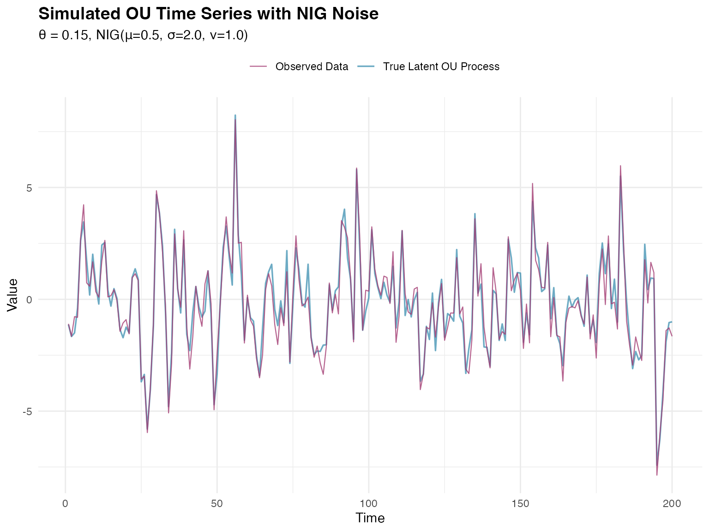
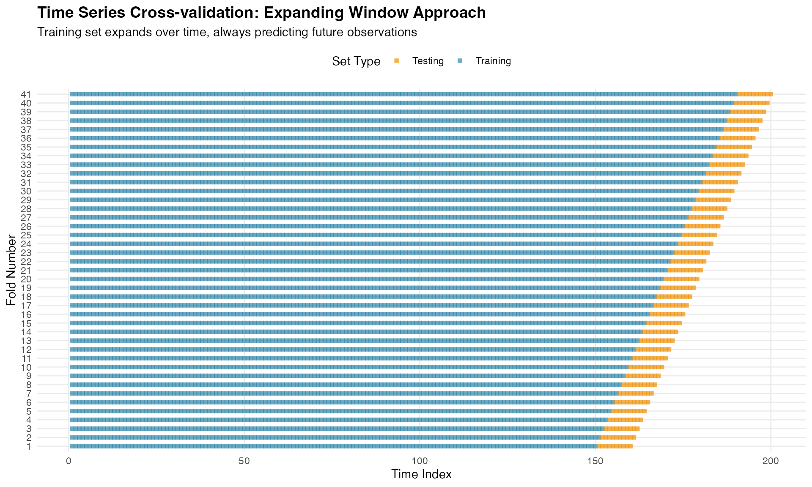
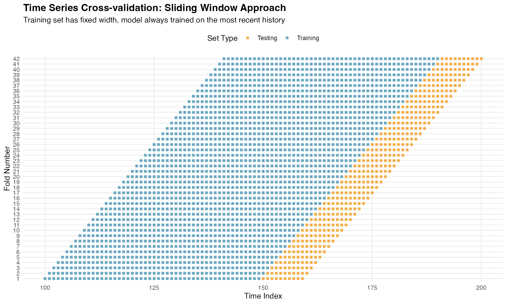
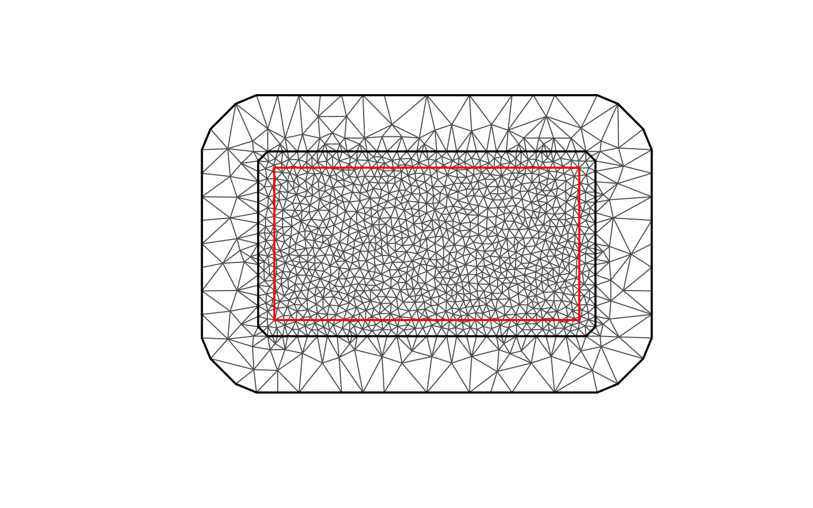
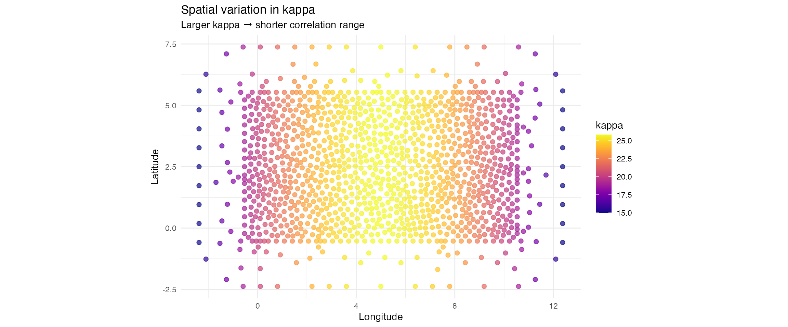
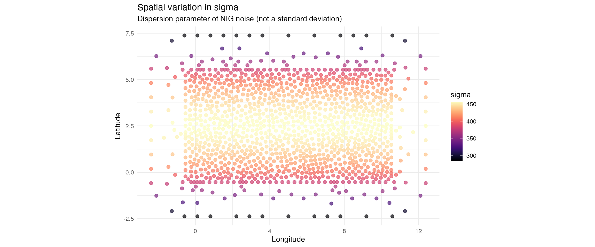
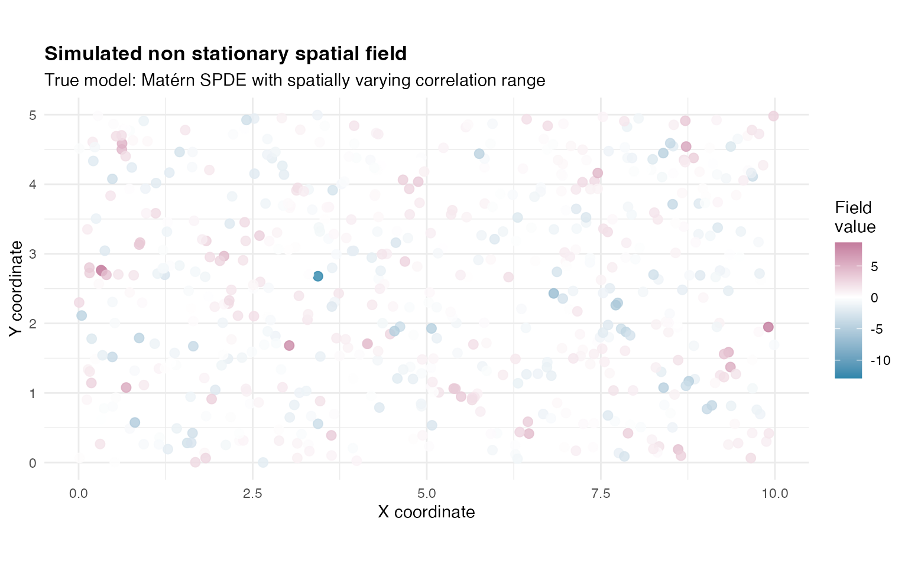
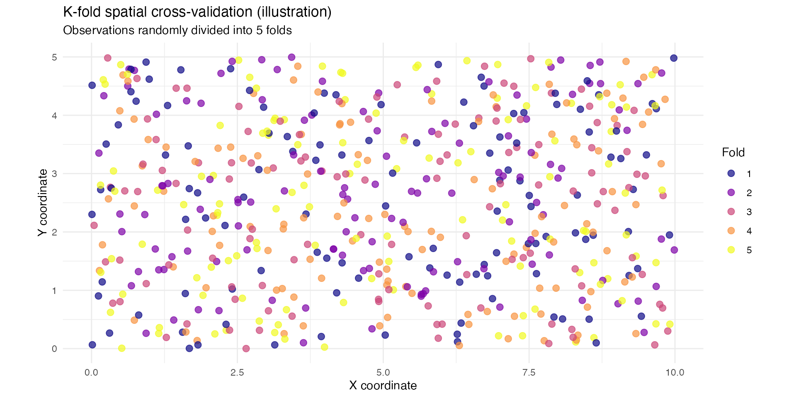
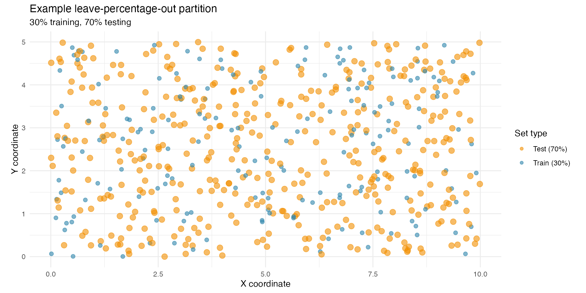

Introduction
Cross-validation is a fundamental tool for model selection and assessment, allowing us to evaluate how well different model specifications generalize to unseen data. In the context of spatial and temporal models, proper cross-validation requires careful attention to the structure of dependence in the data.
This vignette demonstrates cross-validation approaches for both:
- Time series models: where temporal ordering must be respected, comparing Ornstein-Uhlenbeck and Whittle-Matérn processes with NIG noise.
- Spatial models: where the spatial correlation structure must be preserved, using SPDE Matérn models with NIG noise and spatial scales governed either by a stationary range parameter or by a nonstationary, spatially varying range parameter.
We use the ngme2 package’s flexible cross-validation
framework, which supports custom splitting strategies that honor the
dependence structure inherent in spatial and temporal data. A key
feature is the use of the Whittle-Matérn SPDE framework with
non-Gaussian Type-G Lévy noise (NIG, GAL), which provides a
unified approach to modeling both temporal (1D) and spatial (2D)
correlation structures with heavy tails, skewness, and jumps through
stochastic partial differential equations.
Time Series Cross-validation
Temporal Process Models
The ngme2 package supports several temporal process
models with non-Gaussian Type-G Lévy noise. In this
vignette, we compare two approaches:
Ornstein-Uhlenbeck (OU) Process: A continuous-time mean-reverting process driven by the SDE , where is a Type-G Lévy process (NIG, GAL). See the OU vignette for details.
Whittle-Matérn Process: Based on the SPDE on a bounded domain, where is Type-G Lévy noise. For in 1D, this approximates a Matérn covariance structure with smoothness . See the SPDE vignette for details.
Key distinction: The OU process corresponds to (rougher paths), while the Whittle-Matérn with corresponds to (smoother paths). Both are driven by non-Gaussian NIG noise in this example.
For additional time series models available in ngme2,
see the AR1
model and Random
Walk model vignettes.
Generating Simulated OU Data
We begin by simulating a time series from an OU process with NIG noise.
set.seed(123)
# Define OU parameters
n_obs <- 200
theta_true <- 0.15 # Mean-reversion parameter
# NIG noise parameters
mu_true <- 0.5
sigma_true <- 2.0
nu_true <- 1.0
# Create mesh for time series (required for SPDE models)
time_mesh <- fmesher::fm_mesh_1d(
loc = 1:n_obs,
boundary = "free"
)
# Create OU model specification for simulation with NIG noise
ou_spec <- f(
map = 1:n_obs,
model = ou(theta = theta_true),
noise = noise_nig(mu = mu_true, sigma = sigma_true, nu = nu_true)
)
# Simulate the latent OU process
sim_ou <- simulate(ou_spec, seed = 123)[[1]]
# Add measurement noise to create observations
measurement_sd <- 0.5
y <- sim_ou + rnorm(n_obs, mean = 0, sd = measurement_sd)Now we visualize the simulated time series:
# Prepare visualization data
plot_data <- data.frame(
time = 1:n_obs,
observed = y,
latent = sim_ou
)
ggplot(plot_data, aes(x = time)) +
geom_line(aes(y = latent, color = "True Latent OU Process"),
linewidth = 0.6, alpha = 0.7
) +
geom_line(aes(y = observed, color = "Observed Data"),
linewidth = 0.4, alpha = 0.8
) +
scale_color_manual(values = c(
"True Latent OU Process" = "#2E86AB",
"Observed Data" = "#A23B72"
)) +
labs(
title = "Simulated OU Time Series with NIG Noise",
subtitle = sprintf(
"θ = %.2f, NIG(μ=%.1f, σ=%.1f, ν=%.1f)",
theta_true, mu_true, sigma_true, nu_true
),
x = "Time",
y = "Value",
color = ""
) +
theme_minimal() +
theme(
plot.title = element_text(size = 14, face = "bold"),
plot.subtitle = element_text(size = 11),
legend.position = "top"
)
The make_time_series_cv_index() Function
The ngme2 package provides the
make_time_series_cv_index() function to create training and
testing indices that respect temporal ordering. This function is
essential for proper time series cross-validation.
Function Arguments
The main arguments of make_time_series_cv_index()
are:
-
time_idx: A numeric vector of time indices in ascending order (e.g.,1:n_obs) -
train_length: Fixed length of training sets- If
NULL(default): uses expanding window approach (training set grows) - If specified (e.g.,
50): uses sliding window approach (fixed training size)
- If
-
test_length: Number of observations in each test set (forecast horizon). Default is 1 -
gap: Gap between training and test sets. Default is 0 (test starts immediately after training) -
replicate: Optional vector for grouping observations that should stay together
Understanding Expanding vs Sliding Windows
Expanding Window (train_length = NULL):
The training set continuously grows, incorporating all available
historical data. Each fold trains on all past data up to that point.
This approach is appropriate when all past observations are equally
relevant for prediction.
Sliding Window (train_length = fixed value):
The training window size remains constant at the specified value. As
time progresses, old observations are dropped and new ones are added.
This is useful when recent data is more relevant than distant past
observations, or when the data-generating process may change over
time.
Creating Cross-validation Indices
We create indices for both expanding and sliding window approaches:
# Create indices using the EXPANDING WINDOW approach
cv_indices_expanding <- make_time_series_cv_index(
time_idx = 1:n_obs, # Time indices: 1 to 1000
train_length = NULL, # NULL = expanding window
test_length = 10, # Predict 10 steps ahead in each fold
gap = 0 # No gap between train and test
)
# Subsetting to have at least 150 observations in training test
min_obs_train <- 150
total_train_test <- length(cv_indices_expanding$train)
cv_indices_expanding$train <-
cv_indices_expanding$train[min_obs_train:total_train_test]
cv_indices_expanding$test <-
cv_indices_expanding$test[min_obs_train:total_train_test]
# Create indices using the SLIDING WINDOW approach for comparison
cv_indices_sliding <- make_time_series_cv_index(
time_idx = 1:n_obs,
train_length = 50, # Fixed training window of 50 observations
test_length = 10,
gap = 0
)
# Subsetting to only consider the last 100 splits
min_idx_train <- 100
total_train_test <- length(cv_indices_sliding$train)
cv_indices_sliding$train <-
cv_indices_sliding$train[min_idx_train:total_train_test]
cv_indices_sliding$test <-
cv_indices_sliding$test[min_idx_train:total_train_test]
# We'll use the expanding window for our analysis
cv_indices <- cv_indices_expandingThe structure of the created folds is summarized below:
| Approach | Characteristic | Value |
|---|---|---|
| Expanding Window | Number of folds | 41 |
| Expanding Window | Fold 3 training size | 152 |
| Sliding Window | Number of folds | 42 |
| Sliding Window | Fold 3 training size | 50 |
Notice how the expanding window accumulates more data with each fold, while the sliding window maintains a constant training set size. The expanding window approach typically provides more stable predictions as it uses all available historical information.
Visualizing Training and Testing Sets
To understand how time series cross-validation works, let’s visualize the training (blue) and testing (orange) sets for each fold:
# Create visualization data frame
folds_viz <- data.frame()
for (i in 1:length(cv_indices$train)) {
# Add training points
train_df <- data.frame(
time = cv_indices$train[[i]],
fold = i,
set_type = "Training"
)
# Add testing points
test_df <- data.frame(
time = cv_indices$test[[i]],
fold = i,
set_type = "Testing"
)
folds_viz <- rbind(folds_viz, train_df, test_df)
}
# Create visualization
ggplot(folds_viz, aes(x = time, y = factor(fold), color = set_type)) +
geom_point(size = 1.5, alpha = 0.7, shape = 15) +
scale_color_manual(
values = c("Training" = "#2E86AB", "Testing" = "#F18F01"),
name = "Set Type"
) +
labs(
title = "Time Series Cross-validation: Expanding Window Approach",
subtitle = "Training set expands over time, always predicting future observations",
x = "Time Index",
y = "Fold Number"
) +
theme_minimal() +
theme(
plot.title = element_text(size = 14, face = "bold"),
plot.subtitle = element_text(size = 11),
legend.position = "top",
panel.grid.minor = element_blank()
)
This visualization clearly shows the fundamental principle: training data always precedes testing data, mimicking real forecasting scenarios.
For comparison, here is the sliding window approach:
# Build visualization data for the sliding window
folds_viz_sliding <- data.frame()
for (i in 1:length(cv_indices_sliding$train)) {
# Training
train_df <- data.frame(
time = cv_indices_sliding$train[[i]],
fold = i,
set_type = "Training"
)
# Testing
test_df <- data.frame(
time = cv_indices_sliding$test[[i]],
fold = i,
set_type = "Testing"
)
folds_viz_sliding <- rbind(folds_viz_sliding, train_df, test_df)
}
# Plot sliding window
ggplot(folds_viz_sliding, aes(x = time, y = factor(fold), color = set_type)) +
geom_point(size = 1.5, alpha = 0.7, shape = 15) +
scale_color_manual(
values = c("Training" = "#2E86AB", "Testing" = "#F18F01"),
name = "Set Type"
) +
labs(
title = "Time Series Cross-validation: Sliding Window Approach",
subtitle = "Training set has fixed width, model always trained on the most recent history",
x = "Time Index",
y = "Fold Number"
) +
theme_minimal() +
theme(
plot.title = element_text(size = 14, face = "bold"),
plot.subtitle = element_text(size = 11),
legend.position = "top",
panel.grid.minor = element_blank()
)
Fitting Competing Models
We compare two temporal process models, both with NIG noise:
Model 1: OU Process (True Model)
# Prepare data
data_df <- data.frame(y = y, time_idx = 1:n_obs)
# Fit OU model with NIG noise (the true model)
fit_ou <- ngme(
y ~ 0 + f(time_idx, model = ou(), noise = noise_nig()),
data = data_df,
control_opt = control_opt(
iterations = 2000,
n_parallel_chain = 4,
std_lim = 0.01,
seed = 123
)
)Model 2: Whittle-Matérn with α = 2
# Fit Whittle-Matérn model with alpha = 2 and NIG noise
fit_matern <- ngme(
y ~ 0 + f(
time_idx,
model = matern(
mesh = time_mesh,
alpha = 2
),
noise = noise_nig()
),
data = data_df,
control_opt = control_opt(
iterations = 2000,
n_parallel_chain = 4,
std_lim = 0.01,
seed = 456
)
)Performing Time Series Cross-validation
Now we perform cross-validation using the indices from
make_time_series_cv_index(). For each fold, both models are
fitted on the training set and evaluated on the test set:
# Perform cross-validation
cv_results <- cross_validation(
list(
"OU Process (ν=0.5)" = fit_ou,
"Whittle-Matérn (ν=1.5)" = fit_matern
),
type = "custom",
train_idx = cv_indices$train,
test_idx = cv_indices$test,
N_sim = 5, # Number of simulations for each fold
n_gibbs_samples = 500, # Gibbs samples for CRPS computation
seed = 123
)The cross-validation results are presented below:
| MAE | MSE | neg.CRPS | neg.sCRPS | |
|---|---|---|---|---|
| OU Process (ν=0.5) | 2.6007 | 11.2894 | 1.8334 | 1.6436 |
| Whittle-Matérn (ν=1.5) | 5.3108 | 48.5960 | 3.6800 | 1.9717 |
Understanding the Performance Metrics
MAE (Mean Absolute Error): Average absolute difference between predictions and observations. Interpretable in original units and robust to outliers.
MSE (Mean Squared Error): Average squared difference. Penalizes large errors more heavily than MAE.
Negative CRPS (Continuous Ranked Probability Score): Proper scoring rule evaluating the entire predictive distribution (Gneiting & Raftery, 2007). More negative values are better.
Negative Scaled CRPS: A variant of CRPS designed to be locally scale invariant, meaning observations with different levels of predictive uncertainty contribute comparably to the average score.
Cross-validation Conclusions
The results demonstrate that:
OU achieves best performance: The true data-generating model shows lower errors across all metrics, validating the cross-validation approach.
Smoothness matters: The OU process (less smooth) better matches the true process compared to the smoother Whittle-Matérn specification.
All metrics agree: MAE, MSE, CRPS, and sCRPS provide consistent model rankings.
Key principle: Cross-validation respecting temporal structure successfully identifies models that best capture temporal correlation and smoothness properties.
Spatial Cross-validation with SPDE Models
Spatial SPDE Matérn Models
The ngme2 package supports spatial Matérn models through
a non Gaussian extension of the SPDE approach of Lindgren et
al. (2011), which represents a Matérn field as the solution of
with
a Type G Lévy noise input (NIG or GAL). This formulation yields sparse
precision matrices and scalable inference. See the full SPDE
vignette for details.
Stationary SPDE Matérn model
Assumes a constant range parameter
.
The spatial field then has homogeneous smoothness and correlation range
across the domain. This is the simplest and most commonly used
specification.
Non stationary SPDE Matérn model
Allows the range parameter to vary spatially via
where
contains spatial basis functions. This allows the model to capture
heterogeneous spatial scales, with shorter ranges where
is large and smoother behavior where
is small.
Key distinction
The stationary model uses one global range parameter, while the non
stationary model estimates spatially varying ranges through basis
functions. Both models can be driven by non Gaussian Type G noise,
allowing heavy tails and asymmetry in the spatial field.
Generating Simulated Spatial Data
We now turn to spatial data and SPDE models. To demonstrate the importance of proper model specification, we generate data from a non stationary spatial process where the correlation range varies spatially, then compare stationary and non stationary models.
Creating the spatial mesh
First, we construct a triangulation mesh for the SPDE approach.
# Define a rectangular domain
set.seed(42)
domain_boundary <- cbind(
c(0, 10, 10, 0, 0),
c(0, 0, 5, 5, 0)
)
# Create mesh with fmesher
mesh <- fm_mesh_2d(
loc.domain = domain_boundary,
cutoff = 0.15, # Minimum distance between points
max.edge = c(0.4, 1.5) # Maximum triangle edge length
)The mesh properties are summarised below.
| Property | Value |
|---|---|
| Number of vertices | 1236 |
| Number of triangles | 2419 |
We can visualise the mesh structure.
plot(mesh, main = "Spatial mesh for SPDE model", asp = 1)
points(domain_boundary, type = "l", col = "red", lwd = 2)
Defining spatially varying parameters
We now create a non-stationary scenario where both
the spatial range parameter
and the dispersion parameter
of the NIG noise vary across space.
Larger values of
correspond to shorter correlation ranges, while
controls the
local dispersion of the non-Gaussian noise (although it is not a
standard deviation).
The variation is introduced through basis expansions for
and
,
each with its own set of coefficients.
# Extract mesh coordinates
mesh_coords <- mesh$loc[, 1:2]
# ------------------------------------------------------
# Basis functions for spatially varying kappa
# ------------------------------------------------------
B_kappa <- cbind(
Intercept = 1,
Longitude = mesh_coords[, 1] / 10,
Long_squared = (mesh_coords[, 1] / 10)^2
)
# True coefficients for log(kappa)
true_theta_kappa <- c(3, 1, -1)
# Compute kappa(s)
log_kappa_true <- B_kappa %*% true_theta_kappa
kappa_true <- exp(as.vector(log_kappa_true))
# ------------------------------------------------------
# Basis functions for spatially varying sigma
# ------------------------------------------------------
B_sigma <- cbind(
Intercept = 1,
Latitude = mesh_coords[, 2] / 5,
Lat_squared = (mesh_coords[, 2] / 5)^2
)
# True coefficients for log(sigma)
true_theta_sigma <- c(6, 0.5, -0.5)
log_sigma_true <- B_sigma %*% true_theta_sigma
sigma_true <- exp(as.vector(log_sigma_true))
# Data frame for plotting
param_df <- data.frame(
x = mesh_coords[, 1],
y = mesh_coords[, 2],
kappa = kappa_true,
sigma = sigma_true
)The spatial variation in and is summarised below.
| Parameter | Min | Mean | Max |
|---|---|---|---|
| kappa | 14.970 | 22.952 | 25.790 |
| sigma | 284.182 | 421.158 | 457.145 |
We now visualise the spatial variation in both parameters.
p_kappa <- ggplot(param_df, aes(x = x, y = y, colour = kappa)) +
geom_point(size = 2, alpha = 0.7) +
scale_color_viridis(option = "plasma") +
coord_fixed() +
labs(
title = "Spatial variation in kappa",
subtitle = "Larger kappa → shorter correlation range",
x = "Longitude", y = "Latitude", colour = "kappa"
) +
theme_minimal()
p_sigma <- ggplot(param_df, aes(x = x, y = y, colour = sigma)) +
geom_point(size = 2, alpha = 0.7) +
scale_color_viridis(option = "magma") +
coord_fixed() +
labs(
title = "Spatial variation in sigma",
subtitle = "Dispersion parameter of NIG noise (not a standard deviation)",
x = "Longitude", y = "Latitude", colour = "sigma"
) +
theme_minimal()
p_kappa
p_sigma
Simulating observations from the non-stationary model
set.seed(789)
# Observation locations
n_obs <- 600
loc_obs <- cbind(
runif(n_obs, 0, 10),
runif(n_obs, 0, 5)
)
# Noise with spatially varying sigma
true_noise <- noise_nig(
mu = -2.5,
B_sigma = B_sigma,
theta_sigma = true_theta_sigma,
nu = 4
)
# Full non-stationary SPDE model
true_model <- f(
map = loc_obs,
model = matern(
alpha = 2,
mesh = mesh,
B_kappa = B_kappa,
theta_kappa = true_theta_kappa
),
noise = true_noise
)
# Simulate latent field
W_true <- simulate(true_model, seed = 456)[[1]]
# Standard deviation of the simulated field
sd(W_true)
#> [1] 1.950052
# Add measurement noise
sigma_obs <- 0.3
Y_spatial <- W_true + rnorm(n_obs, sd = sigma_obs)Summary statistics for the simulated field.
| Statistic | Value |
|---|---|
| Mean | 0.054 |
| Standard deviation | 1.950 |
| Range (max minus min) | 21.569 |
We visualise the simulated non stationary spatial field.
sim_df <- data.frame(
x = loc_obs[, 1],
y = loc_obs[, 2],
W = W_true,
Y = Y_spatial
)
p_field <- ggplot(sim_df, aes(x = x, y = y, colour = W)) +
geom_point(size = 2.5, alpha = 0.8) +
scale_color_gradient2(
low = "#2E86AB",
mid = "#FFFFFF",
high = "#A23B72",
midpoint = 0,
name = "Field\nvalue"
) +
coord_fixed() +
labs(
title = "Simulated non stationary spatial field",
subtitle = "True model: Matérn SPDE with spatially varying correlation range",
x = "X coordinate",
y = "Y coordinate"
) +
theme_minimal() +
theme(
plot.title = element_text(size = 13, face = "bold"),
plot.subtitle = element_text(size = 11)
)
p_field
Fitting competing spatial SPDE models
We now fit two competing models to these simulated data.
-
Model A: stationary SPDE Matérn, which assumes a
single global range parameter.
- Model B: non stationary SPDE Matérn, which allows to vary in space using the same basis as in the simulation.
Model A: stationary SPDE Matérn
fit_stationary <- ngme(
Y ~ 0 + f(
loc_obs,
name = "spde_stationary",
model = matern(
mesh = mesh
),
noise = noise_nig()
),
data = data.frame(Y = Y_spatial),
control_opt = control_opt(
iterations = 2000,
optimizer = precond_sgd(),
n_parallel_chain = 4,
std_lim = 0.01,
seed = 111
)
)Model B: non stationary SPDE Matérn
fit_nonstationary <- ngme(
Y ~ 0 + f(
loc_obs,
name = "spde_nonstationary",
model = matern(
mesh = mesh,
B_kappa = B_kappa, # Basis for kappa variation
theta_kappa = c(2, 0, 0), # Starting values of kappa
),
noise = noise_nig(
B_sigma = B_sigma, # Basis for sigma variation
theta_sigma = c(4, 0, 0)
) # Starting values of sigma
),
data = data.frame(Y = Y_spatial),
control_opt = control_opt(
iterations = 2000,
optimizer = precond_sgd(),
n_parallel_chain = 4,
std_lim = 0.01,
seed = 222
)
)Both spatial models have been successfully fitted. The stationary model estimates a single global value of , while the non stationary model estimates spatially varying through the coefficients of the basis functions defined above.
Spatial cross-validation
Cross-validation in spatial models must account for the fact that
observations are not independent, and that prediction performance
depends strongly on the spatial configuration of the training and
testing sets. The ngme2 framework supports several
cross-validation strategies, including K-fold,
leave-percentage-out, and fully custom splits. In this
vignette, we illustrate both approaches but only the
leave-percentage-out (LPO) method is used when computing the
actual cross-validation scores.
K-fold is included purely to show how spatial folds are created and how they look when visualized, which helps build intuition about training/testing partitions in non-lattice spatial data.
K-fold spatial cross-validation (illustration only)
Understanding K-fold spatial cross-validation
In K-fold cross-validation, the observations are randomly divided into K approximately equal-sized subsets:
- The data are partitioned at random into
folds.
- For each fold
:
- The testing set corresponds to all observations in
fold
.
- The training set corresponds to all remaining
observations.
- The testing set corresponds to all observations in
fold
.
- The procedure is repeated K times, using each fold as the test set exactly once.
Although widely used, K-fold has some limitations for spatial data:
- Spatially close observations may fall into different folds,
violating the idea of “held-out regions”.
- Test sets are often too small to evaluate large-scale prediction
behavior.
- Training coverage remains high (typically ), leading to relatively easy prediction tasks.
In this vignette K-fold is presented as it is a common
cross-validation option and is available in the
cross_validation() function.
Creating K-fold partitions
We follow the same splitting logic used internally by the
cross_validation() function.
set.seed(888)
k_folds <- 5
n_data <- nrow(loc_obs)
# Index sequence
idx <- seq_len(n_data)
# Random fold assignment
folds <- cut(sample(idx), breaks = k_folds, label = FALSE)
# Build index lists
test_idx_kfold <- lapply(1:k_folds, function(x) which(folds == x))
train_idx_kfold <- lapply(1:k_folds, function(x) which(folds != x))Distribution of the number of observations per fold:
| Fold | Number_of_locations |
|---|---|
| 1 | 120 |
| 2 | 120 |
| 3 | 120 |
| 4 | 120 |
| 5 | 120 |
Visualising the spatial K-fold split
The figure below shows how observations are distributed across the K
folds.
The folds are not spatially contiguous, which is typical in randomly
assigned K-fold for point-referenced spatial data.
df_folds <- data.frame(
x = loc_obs[, 1],
y = loc_obs[, 2],
fold = factor(folds)
)
ggplot(df_folds, aes(x = x, y = y, colour = fold)) +
geom_point(size = 2.5, alpha = 0.7) +
scale_color_viridis_d(option = "plasma", name = "Fold") +
coord_fixed() +
labs(
title = "K-fold spatial cross-validation (illustration)",
subtitle = sprintf("Observations randomly divided into %d folds", k_folds),
x = "X coordinate", y = "Y coordinate"
) +
theme_minimal()
K-fold is therefore useful as a reference point, but not the scheme used for computing cross-validation scores in this vignette.
Leave-percentage-out (LPO) spatial cross-validation
Understanding leave-percentage-out cross-validation
Leave-percentage-out (LPO) is often more appropriate for spatial models because it allows the size of training and test sets to be controlled directly.
Key features of LPO:
- You specify the proportion of data to train on
(here 30 percent).
- The remaining data serve as the test set (here 70
percent).
- The split is repeated multiple times (here, to reduce computational
cost, 5 repetitions).
- Each repetition creates a new random partition.
This produces a more difficult prediction task, especially when the training fraction is small, and therefore yields a realistic evaluation of extrapolation ability.
Choosing 30 percent training and 70 percent testing
Using only 30 percent of the observations for training ensures a deliberately challenging scenario:
- Training data form a sparse set of locations across the
domain.
- Testing data cover most of the spatial region (70 percent),
including areas far from training points.
- Stationary models tend to struggle with such extrapolation, whereas non-stationary SPDE models can adapt via spatially varying range or dispersion.
This makes LPO with a small training fraction a strong diagnostic tool.
Creating LPO partitions
set.seed(707)
percent_train <- 0.30
percent_test <- 0.70
n_reps <- 5
n_data <- nrow(loc_obs)
train_idx_lpo <- vector("list", n_reps)
test_idx_lpo <- vector("list", n_reps)
for (i in 1:n_reps) {
train_idx_lpo[[i]] <- sample(1:n_data, size = floor(percent_train * n_data))
test_idx_lpo[[i]] <- setdiff(1:n_data, train_idx_lpo[[i]])
}Example LPO split (30% train, 70% test)
df_lpo <- data.frame(
x = loc_obs[, 1],
y = loc_obs[, 2],
set_type = ifelse(1:n_data %in% train_idx_lpo[[1]],
"Train (30%)", "Test (70%)"
)
)
ggplot(df_lpo, aes(x = x, y = y, colour = set_type, size = set_type)) +
geom_point(alpha = 0.6) +
scale_color_manual(
values = c("Train (30%)" = "#2E86AB", "Test (70%)" = "#F18F01"),
name = "Set type"
) +
scale_size_manual(values = c("Train (30%)" = 2, "Test (70%)" = 3), guide = "none") +
coord_fixed() +
labs(
title = "Example leave-percentage-out partition",
subtitle = "30% training, 70% testing",
x = "X coordinate", y = "Y coordinate"
) +
theme_minimal()
Performing LPO cross-validation (main results)
cv_spatial_lpo <- cross_validation(
list(
"Stationary SPDE" = fit_stationary,
"Non-stationary SPDE" = fit_nonstationary
),
type = "lpo",
percent = percent_test,
times = n_reps,
n_gibbs_samples = 500,
seed = 2025
)